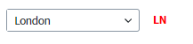
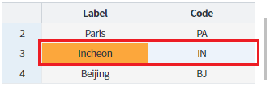
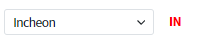
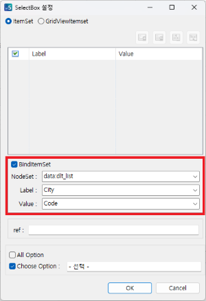
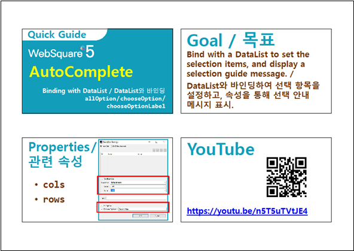

AutoComplete의 선택 목록을 DataList와 연동하는 예제입니다. 선택 항목에 표시할 Label로 사용할 coulmn과 선택 했을 때 값으로 사용할 column을 가진 DataList를 설정하면 선택 목록에 표시됩니다.
DataList의 데이터와 연동해 선택 목록에 표시
AutoComplete의 값을 선택하고 표시된 선택 값을 확인합니다.
[브라우저(Chrome) 실행 예시]

(모바일의 경우 Cell 클릭 후 "SPACE BAR" 키를 사용)
수정 예시)
Label : London -> Incheon
Colde : LN -> IN
[브라우저(Chrome) 실행 예시]

[브라우저(Chrome) 실행 예시]

NodeSet : 연동할 DataList
Label : 선택 목록에 표시할 텍스트 컬럼
Value : 선택한 아이템의 값 컬럼
그림 1.웹스퀘어5 SP5 스튜디오의 Property 탭 예시

[소스 코드 예시]
<w2:autoComplete ...>
<w2:choices>
<w2:itemset nodeset="data:dlt_list">
<w2:label ref="City"></w2:label>
<w2:value ref="Code"></w2:value>
</w2:itemset>
</w2:choices>
</w2:autoComplete>[웹스퀘어5 SP5 개발 가이드] DataList 바인딩
링크 : https://docs1.inswave.com/sp5_user_guide/8df43d1f59fab704#386fa1b55a4bda6a
AutoComplete - BindItemSet & allOption & chooseOption & chooseOptionLabel
링크 : https://youtu.be/n5T5uTVtJE4
